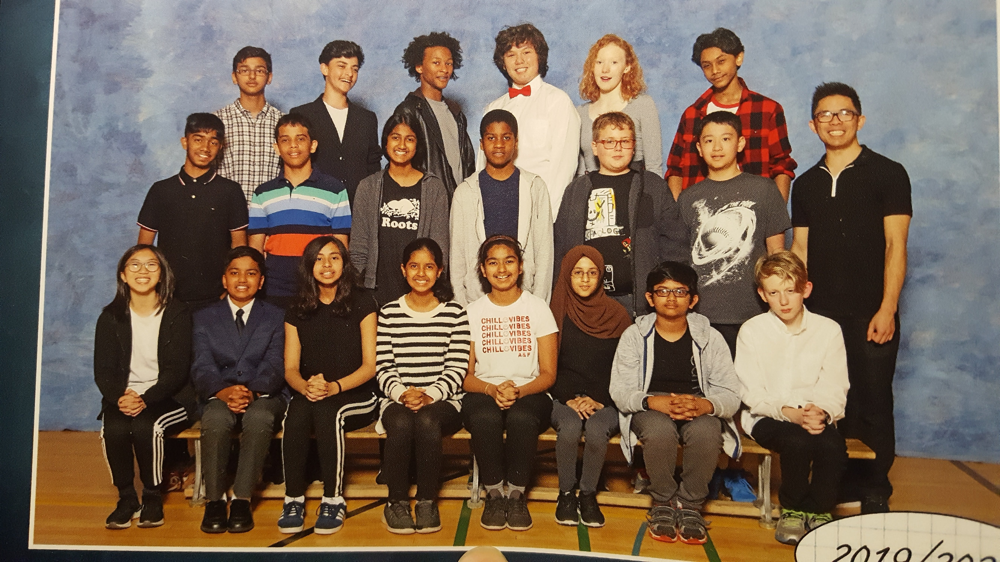

My long-term goal is to make the most amount of money
with the least amount of effort. I have no idea what I would want to do for a career yet, but the things
that I currently like are things that I'd rather have stay hobbies, so I'm open to jobs that will make
me a lot of money. If it was something that I didn't hate doing that'd be great too. I think I would be
okay doing a boring job as long as I made enough money to do whatever I wanted on the side.
Other than that though, I have small goals like improving in piano and art. I'd also like to travel the world
and visit places like Germany, China or Japan. I've only been out of the country once, and that was to go to
Florida in 2012 so I don't really remember it. I've never been out of the continent either, and I'd really like to
go sightseeing in other places and see what the culture is like.
Munich, Germany
Beijing, China
Osaka, Japan
Also, not to brag or anything, but I think I had really great classmates and have the coolest friends, so I hope I can continue
to keep in touch with them and maybe have a class reunion one day.

My class in grade 8
The plan was for everyone to wear black and white, and as you can see, it worked out amazingly.
I haven't thought about my future an extreme amount; I just want a simple life where I have money and didn't fail or drop out of school.
Back to top